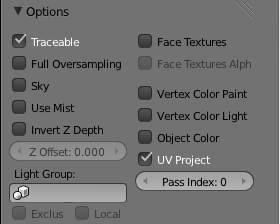

Options¶

Material Options Panel.
This panel provides a series of control options concerning how objects using this material will appear in the rendered image. All controls are default “Off” unless otherwise stated.
- Traceable (default On)
- Include this material and the geometry that uses it in ray-tracing calculations. See Transparency for details of ray-tracing.
- Full Oversampling
- Force this material to render full shading/textures for all anti-aliasing samples.
- Sky
- 渲染 this material with zero alpha, but with sky background in place (scanline only)
- Use Mist
- Use mist on this material (see “World 设置” for more details)
- Invert Z depth
- 渲染 material’s faces with an inverted Z buffer (scanline only)
- Z Offset
- Give faces an artificial Z offset for Z transparency.
- Light Group
- Limit lighting to lamps in this light group.
- Exclusive
- Uses the light group exclusively - these lamps are excluded from other scene lighting
- Local
- When linked in, uses local light group with the same name.
- Face 纹理
- Replace object’s base color with color from UV map image textures.
- Face 纹理 Alpha
- Replace object’s base alpha with alpha from UV map image textures.
- Vertex Color Paint
- Replace object’s base color with vertex paint colors (multiply with ‘texture face’ face assigned textures)
- Vertex Color Light
- Add vertex paint colors as additional lighting. (This can be used to produce good incandescence effects).
- Object Color
- Modulate the result with a per object color
- UV Project (default On)
- Use to ensure UV interpolation is correct for camera projections (use with UV project modifier).
- Pass Index
- Index number for the IndexMA render pass.